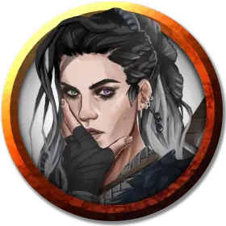

Портия Дзут
Portia Dzuth
Средний Гуманоид (Человек), законно-нейтральный, именной НИП

Класс Доспеха 18 (латы)
Хиты 143 (22к8 + 44)
Скорость 30 футов
| мод | спас | ||
|---|---|---|---|
| СИЛ | 20 | +5 | +9 |
| ЛОВ | 15 | +2 | +2 |
| ТЕЛ | 14 | +2 | +9 |
| мод | спас | ||
|---|---|---|---|
| ИНТ | 10 | +0 | +0 |
| МДР | 14 | +2 | +2 |
| ХАР | 12 | +1 | +1 |
Навыки Атлетика +9, Восприятие +6, Запугивание +5
Чувства пассивное Восприятие 16
Языки Общий
Опасность 9 (5000 опыта)
Бонус мастерства +4
Особенности
Упорный (2/день). Портия может перебросить проваленный спасбросок.
Второе дыхание (Перезаряжается после короткого или продолжительного отдыха). Бонусным действием Портия может восстановить 20 хитов.
Отчаянье Царства Теней. Портия ощущает непроходящий ужас от окружающего. Пока не кончится эффект отчаянья, она получает помеху ко всем спасброскам и следующую слабость характера: «Я уверена, что умру в Приюте Ванрака». Она может попытаться побороть своё отчаянье по окончанию продолжительного отдыха, совершив успешный спасбросок Мудрости Сл 15 . Заклинание умиротворение [calm emotions] и все заклинания и эффекты, снимающие проклятье, также отменяют действие отчаянья.
Действия
Мультиатака. Портия совершает три атаки двуручным мечом или коротким луком.
Двуручный меч. Рукопашная атака оружием: +9 к попаданию, досягаемость 5 футов, одна цель. Попадание: Рубящий урон 12 (2к6 + 5), плюс рубящий урон 7 (2к6) если у чемпиона больше половины от общего числа хитов.
Короткий лук. Дальнобойная атака оружием: +6 к попаданию, дистанция 80/320 футов, одна цель. Попадание: Колющий урон 5 (1к6 + 2), плюс колющий урон 7 (2к6) если у чемпиона больше половины от общего числа хитов.
Описание
Портия Дзут родом из Рашемена. Она единственная выжившая из группы искателей приключений, нанятой Леди Уайлд Луннозвездной из Глубоководья для поисков теневого дракона Умбраксакара и превращения его обратно в бронзового дракона Глистера, друга Дома Луннозвездных. Портия считает, что проклятие Умбраксакара можно снять избавив дракона от отчаянья, но понятия не имеет, как это сделать. Она и ее спутники попали в плен меньше месяца назад, но Портия потеряла счет времени и считает, что в тюрьме Приюта Ванрака находится гораздо дольше.
Порождения вампиров питаются Портией всякий раз, когда им не хватает крови, и у нее видны доказывающее это следы укусов. После каждого кормления Кереста очаровывает Портию, чтобы она оставалась спокойной и держать ее под контролем.